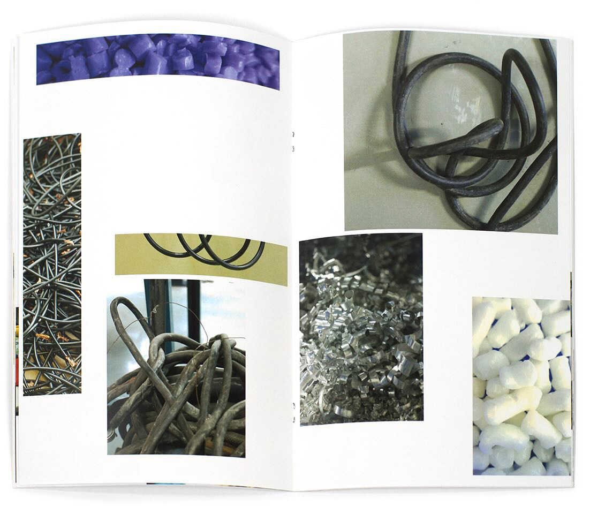
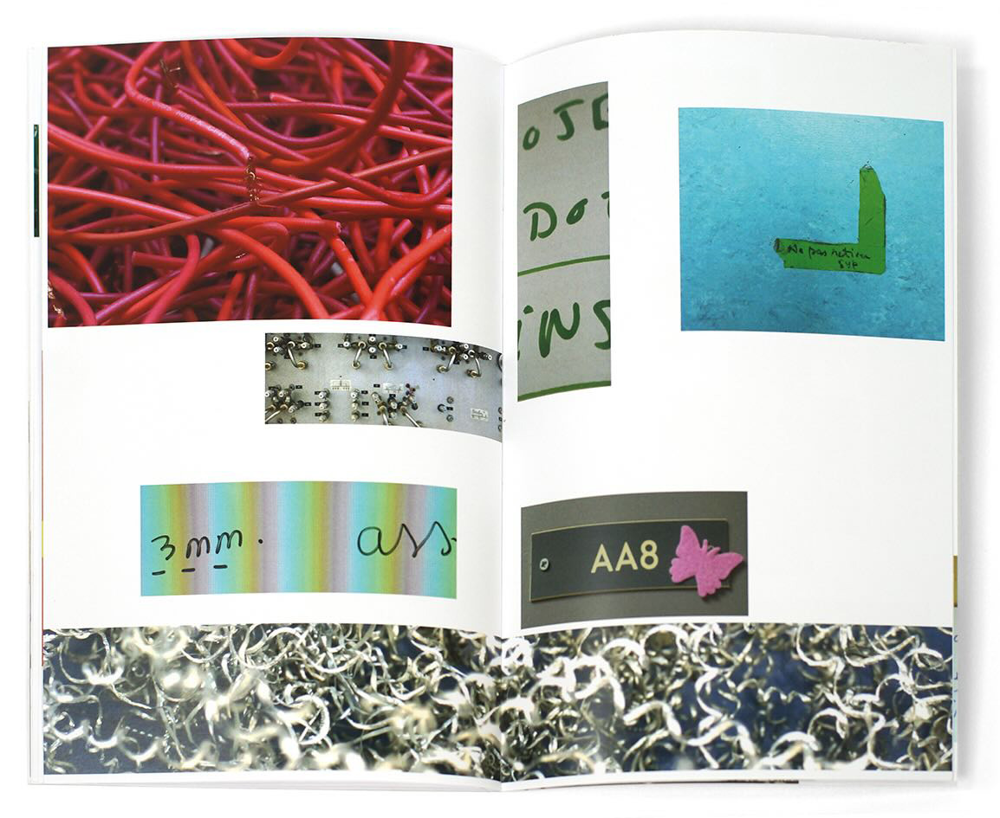
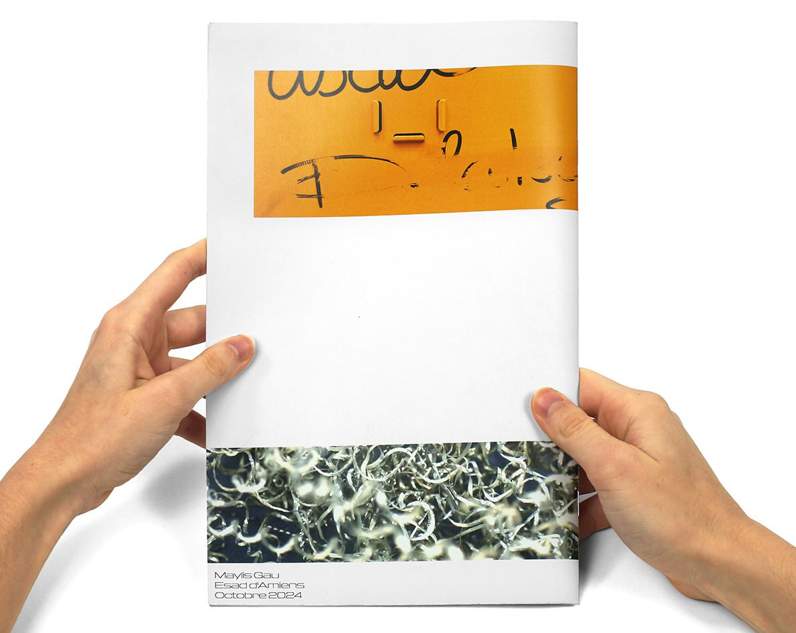
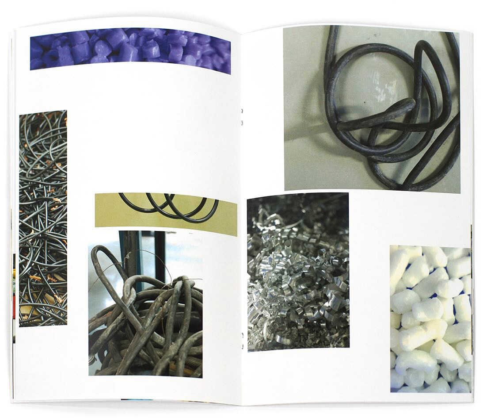
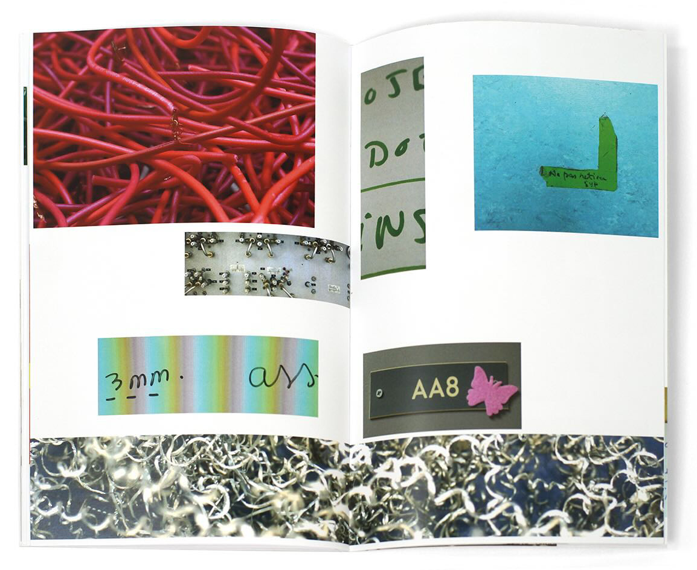
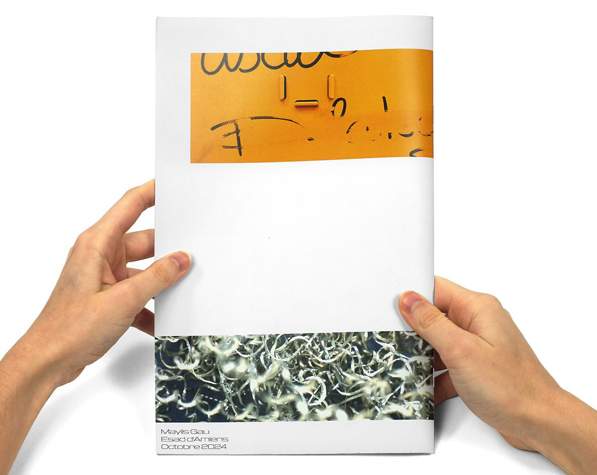

Inventaire lycéen
Présentation éditoriale des photos prises au lycée Édouard Branly d'Amiens. Lors de ces prises le but était de se concentrer sur les formes et les couleurs présentes devant mon objectif. La mise en page est expérimentale, elle tente de préésenter chaque double page comme une composition indépendnate. Elle possède tout de même une grille mais tente au maximum de s'en libérer.
 




